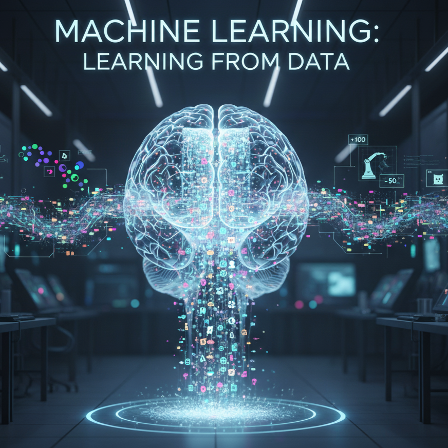
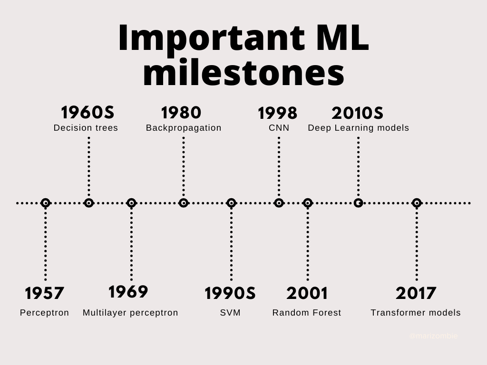
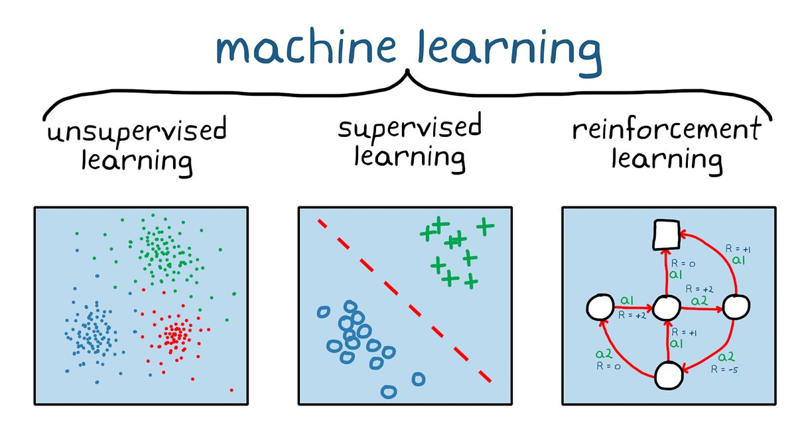
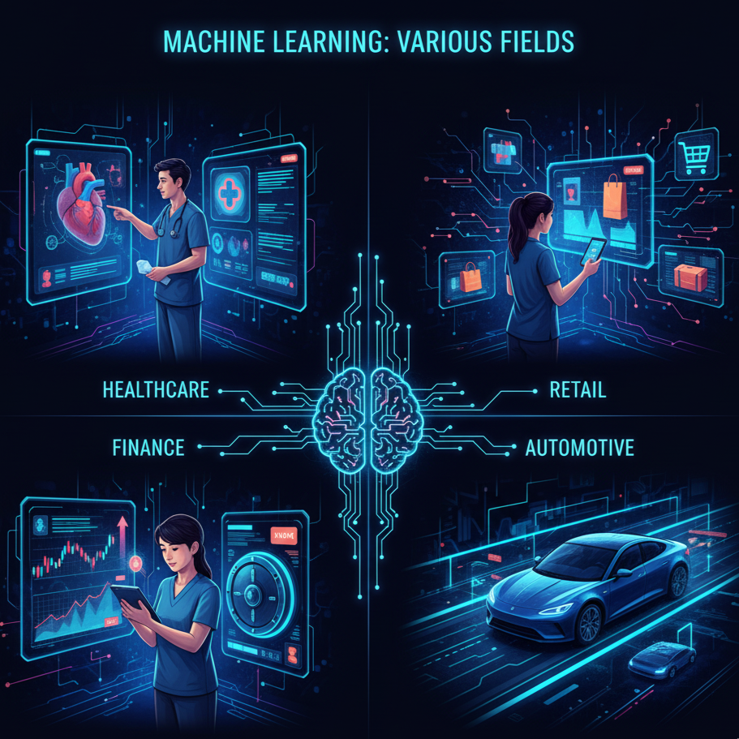

Apa itu Machine Learning?

Machine Learning adalah cabang dari kecerdasan buatan yang memungkinkan sistem untuk belajar secara
otomatis dari data tanpa harus diprogram secara eksplisit. Dalam prosesnya, algoritma Machine
Learning menganalisis pola dan hubungan dalam data untuk membuat prediksi, klasifikasi, atau
keputusan.
Teknologi ini bekerja dengan menggunakan model statistik dan komputasi yang terus ditingkatkan
seiring bertambahnya data yang diterima. Dengan kata lain, semakin banyak data yang digunakan untuk
melatih model, semakin akurat hasil prediksi atau analisis yang dihasilkan. Machine Learning saat
ini menjadi fondasi penting dalam berbagai bidang seperti kesehatan, keuangan, otomotif, hingga
keamanan siber.
Sejarah Machine Learning

Sejarah perkembangan Machine Learning dimulai pada tahun 1957 ketika Frank Rosenblatt memperkenalkan
Perceptron, model jaringan saraf sederhana untuk klasifikasi data. Pada tahun 1960-an, konsep
Decision Trees dikembangkan untuk membantu pengambilan keputusan berbasis data. Lalu pada 1969
muncul Multilayer Perceptron yang memungkinkan jaringan saraf memproses data dengan lapisan yang
lebih dalam. Perkembangan besar berikutnya terjadi di tahun 1980 dengan diperkenalkannya teknik
Backpropagation, yang membuat pelatihan jaringan saraf menjadi lebih efisien.
Pada dekade 1990-an, Support Vector Machines (SVM) menjadi populer karena performanya yang tinggi
dalam klasifikasi data, diikuti oleh Random Forest pada 2001 yang meningkatkan akurasi prediksi
melalui penggabungan banyak pohon keputusan. Tahun 1998 ditandai dengan lahirnya Convolutional
Neural Networks (CNN) yang mendukung kemajuan besar di bidang visi komputer. Era 2010-an ditandai
dengan kebangkitan Deep Learning Models, yang merevolusi pengolahan data skala besar, dan di tahun
2017, model Transformer muncul, menjadi dasar bagi teknologi pemrosesan bahasa alami modern seperti
GPT.
Jenis - Jenis Machine Learning

Unsupervised Learning
Unsupervised learning adalah jenis Machine Learning yang bekerja tanpa label data. Algoritma ini
mencari pola, kelompok (clustering), atau struktur tersembunyi dari data mentah. Contoh penerapannya
adalah pengelompokan pelanggan berdasarkan kebiasaan belanja atau pengelompokan gambar serupa dalam
arsip foto tanpa harus memberi tahu sistem kategori sebelumnya.
Supervised Learning
Supervised learning menggunakan data yang sudah diberi label untuk melatih model agar bisa
memprediksi atau mengklasifikasi data baru. Model ini belajar dari pasangan input-output yang
tersedia untuk menemukan hubungan di antara keduanya. Contoh penggunaannya adalah prediksi harga
rumah berdasarkan data ukuran, lokasi, dan fasilitas, atau mendeteksi email spam dari riwayat email
yang sudah diberi label.
Reinforcement Learning
Reinforcement learning adalah metode di mana agen (program) belajar melalui interaksi dengan
lingkungan dan menerima umpan balik berupa reward atau penalty. Agen mencoba berbagai tindakan untuk
memaksimalkan total reward dalam jangka panjang. Contoh penerapannya adalah robot yang belajar
berjalan, sistem rekomendasi iklan yang menyesuaikan pilihan terbaik, atau AI pada game yang belajar
strategi untuk menang.
Penerapan Machine Learning di Berbagai Bidang

Kesehatan
Machine Learning di bidang kesehatan berperan penting dalam menganalisis data medis seperti
citra rontgen, MRI, atau hasil laboratorium untuk membantu dokter mendiagnosis penyakit dengan
lebih cepat dan akurat. Teknologi ini juga digunakan untuk memprediksi risiko penyakit kronis,
memantau kondisi pasien secara real-time, hingga merancang perawatan yang dipersonalisasi sesuai
kebutuhan masing-masing.
Retail
Dalam dunia ritel, Machine Learning digunakan untuk memahami pola belanja pelanggan melalui data
transaksi dan preferensi. Teknologi ini memungkinkan sistem rekomendasi produk yang lebih
relevan, mengoptimalkan manajemen stok, serta mendukung strategi pemasaran yang lebih tepat
sasaran. Hasilnya, pengalaman belanja pelanggan menjadi lebih personal dan efisien bagi penjual.
Finance
Machine Learning di sektor keuangan membantu menganalisis data pasar dalam jumlah besar untuk
memprediksi tren harga saham, nilai tukar, atau risiko investasi. Teknologi ini juga dapat
mendeteksi aktivitas penipuan atau transaksi yang mencurigakan dengan cepat, sehingga
meningkatkan keamanan data finansial. Selain itu, ML digunakan untuk mengotomatisasi proses
pengambilan keputusan kredit dan portofolio investasi.
Otomotif
Dalam industri otomotif, Machine Learning digunakan untuk mengembangkan kendaraan otonom yang
mampu mengenali rambu lalu lintas, pejalan kaki, dan kondisi jalan secara real-time. Teknologi
ini juga mendukung sistem navigasi pintar, deteksi potensi bahaya, serta perawatan prediktif
untuk mengurangi kerusakan kendaraan. Dengan demikian, ML membantu menciptakan pengalaman
berkendara yang lebih aman, efisien, dan ramah pengguna.